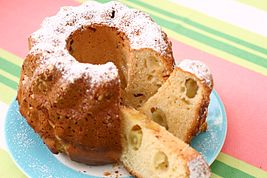

Bundt Cake

Description
A Bundt cake (/bʌnt/) is a cake that is baked in a Bundt pan, shaping it into a distinctive doughnut shape.
The shape is inspired by a traditional European cake known as Gugelhupf, but Bundt cakes are not generally
associated with any single recipe. The style of mold in North America was popularized in the 1950s and 1960s,
after cookware manufacturer Nordic Ware trademarked the name "Bundt" and began producing Bundt pans from cast aluminum.
Publicity from Pillsbury saw the cakes gain widespread popularity.
Ingredients
- 3 cups all-purpose flour(375 g)
- 2 teaspoons baking powder
- 1 cup unsalted butter(230 g), 2 sticks, room temperature
- 2 cups granulated sugar(400 g)
- 1 teaspoon kosher salt
- 3 large eggs, room temperature
- 2 tablespoons lemon zest
- ¼ cup lemon juice(60 mL)
- 1 teaspoon vanilla extract
- 1 cup whole milk(240 mL)
- nonstick cooking spray, for greasing
Steps
- Preheat the oven to 350˚F (180˚C).
- Make the cake: In a medium bowl, whisk together the flour and baking powder.
- In a large bowl, cream the butter, sugar, and salt with an electric hand mixer
until fluffy, about 3 minutes. Add the eggs, one at a time, beating until fully
incorporated before adding the next. Add the lemon zest, lemon juice, and vanilla
and beat to combine.
- Add half the flour and beat to combine, then beat in the milk, then add the rest of the flour
and beat just until incorporated. Scrape down the sides of the bowl with a rubber spatula and
make sure any floury spots are incorporated.
- Grease a 10-inch (25-cm) bundt pan with nonstick spray. Spoon the batter into the pan and smooth the top.
Gently tap the pan against the counter to release any air bubbles.
- Bake the cake for 50 minutes, until a toothpick inserted in the center comes out clean.
- While the cake is baking, make the lemon glaze: In a small microwave-safe bowl, combine the sugar and lemon juice.
Microwave for 1 minute, stirring halfway through, until the sugar is completely dissolved. Set aside.
- Make the lemon icing: Sift the powdered sugar into a medium bowl. Add the lemon juice and whisk until smooth.
- After the cake is done baking, let cool in the pan for 10 minutes, then invert onto a wire rack set over a baking
sheet and remove the bundt pan. Use a knife to loosen the cake around the edges, if needed.
- Use a skewer or fork to poke holes all over the top and sides of the cake. Brush the cake with the lemon glaze.
If the glaze drips off, let the cake cool for a few more minutes, then continue brushing on the glaze. Let cool completely, at least 1 hour.
- Pour the icing over the top of the cake, letting it drip down the sides. Grate lemon zest over the icing. Let the glaze dry completely, about 30 minutes.
- Transfer the cake to a serving platter, slice, and serve.